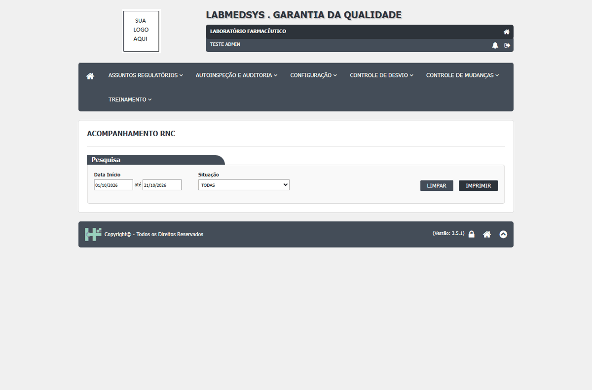

DV-GQ-031 · O Acompanhamento RD imprime a coluna Grau de Criticidade em branco
O Acompanhamento RD imprime a coluna Grau de Criticidade em branco. O que a tela mostra: Em branco.
Como reproduzir o erro, passo a passo
- Imprimir o Acompanhamento com CAPA Crítico e Menor.
Esperado
Coluna GRAU CRITICIDADE preenchida.
Obtido
Em branco.
Evidência (captura da tela)

DV-GQ-037 · PDF do Acompanhamento RD com situação diferente da tela (não reproduzido)
PDF do Acompanhamento RD com situação diferente da tela (não reproduzido). O que a tela mostra: 018/26 (Cancelado) sai como Pendente Registro; 026/26 sai como Pendente Responsável Área, quando a tela diz Pendente Pré Avaliação.
Como reproduzir o erro, passo a passo
- Comparar o PDF do Acompanhamento com a tela.
Esperado
Mesma situação.
Obtido
018/26 (Cancelado) sai como Pendente Registro; 026/26 sai como Pendente Responsável Área, quando a tela diz Pendente Pré Avaliação.
Evidência (captura da tela)

DV-GQ-081 · Acompanhamento RD: datas inválidas dão erro técnico; início maior que o fim e ano 1900 passam sem aviso
Datas inválidas dão erro técnico, início maior que o fim e ano 1900 não dão aviso.
Como reproduzir o erro, passo a passo
- Tela 13, datas 31/02/2026 ou 00/00/0000.
- Início maior que o fim.
- Início em 1900.
Esperado
Aviso claro.
Obtido
Página de erro técnico, PDF vazio sem aviso e PDF completo, respectivamente.
Sem captura de tela registrada para este defeito.
DV-GQ-034 · Acompanhamento RD e Controle de Emissão imprimem a data no formato americano
Acompanhamento RD e Controle de Emissão imprimem a data no formato americano. O que a tela mostra: Data do cabeçalho no formato americano (10/21/2026 10:03 PM); a URL leva datas em mm/dd/aaaa.
Como reproduzir o erro, passo a passo
- Imprimir.
Esperado
Data no formato do Brasil.
Obtido
Data do cabeçalho no formato americano (10/21/2026 10:03 PM); a URL leva datas em mm/dd/aaaa.
Evidência (captura da tela)
DV-GQ-332 · Seis das sete telas do Controle de Desvios testadas abrem sem login
Sem nenhuma sessão, o endereço dessas telas abre (código 200) com os filtros. Ao pesquisar, nenhuma linha vem, e o PDF do Acompanhamento RD dá erro 500; Relatório de Desvios dá "Server Error". Os dados não vazam nesse teste, mas a tela não exige sessão (relação com SEG-GQ-01).
Como reproduzir o erro, passo a passo
- Sem nenhuma sessão aberta, abrir o endereço de cada tela do módulo GQ.
Esperado
Redirecionar ao login.
Obtido
A página abre; ao pesquisar, nenhuma linha vem; o PDF do Acompanhamento dá erro 500.
Sem captura de tela registrada para este defeito.